TNT的介绍
TNT是三硝基甲苯的英文缩写，一般指2,4,6-三硝基甲苯。
该物质于1863年由TJ·威尔伯兰德在一次失败的实验中发明，但在此后的很多年里一直被认为是由诺贝尔所发明，造成了很大的误解。
2,4,6-三硝基甲苯是一种具有较大威力但十分安全的炸药，其撞击感度为14.7N·m。
TNT在20世纪初逐渐取代了苦味酸，用于炮弹装药。在第二次世界大战结束前，TNT一直是综合性能最好的炸药，被称为 “炸药之王”。
TNT味苦，有毒，为淡黄色晶体，暴露在空气中且有日照时颜色会逐渐变深而变质，但少量变质并不影响爆炸。
TNT在非密闭情况下遇火只会燃烧、冒浓烟，不会爆炸。
熔铸成块的TNT抗水性强，可直接用于水下爆破，鳞片状的TNT则要注意防水。
实验部分
[!Warning]
浓硫酸和发烟硝酸有强腐蚀性
甲苯高度易燃且有毒性
DNT和TNT有剧毒
所需试剂和仪器
试剂
- 甲苯
- 浓硫酸(98%)
- 发烟硝酸(≥95%)
- 亚硫酸钠
仪器
- 量筒
- 烧杯
- 碗 ？
- 锅 ？
- 电子秤
- 磁力搅拌机
- 温度计
- 分液漏斗
步骤
- 打开一瓶250mL装的
发烟硝酸，将其全部倒入500mL的烧杯中。
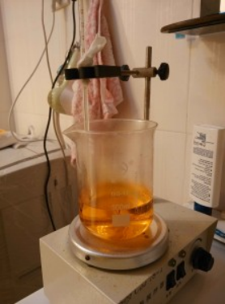 - 量取75mL
甲苯，装入分液漏斗。
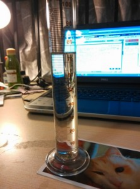 - 在剧烈搅拌下向
发烟硝酸中缓慢滴入甲苯，水浴控制反应液温度不超过50℃，如温控得当，75mL甲苯约在1-2h内加完。
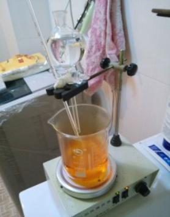 - 加完
甲苯之后，水浴下将硝化液升温到60℃并保温一小时。
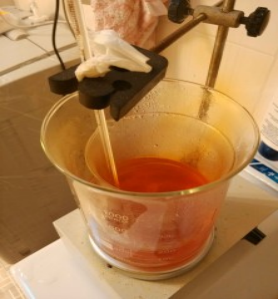 - 将硝化液倒入盛有大量冷水的1000mL
烧杯中，可见大量二硝基甲苯析出。
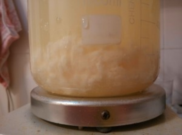 - 倒去上层废酸，再加入开水使其熔融，搅拌清洗5分钟，倒去上层废液。
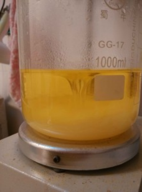 - 将留在
烧杯底部的二硝基甲苯直接加热熔融并保持一段时间以蒸干水分。
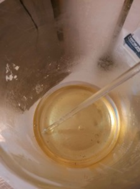 - 用100mL
烧杯粗略量取100mL浓硫酸，缓慢加入熔融的二硝基甲苯中。
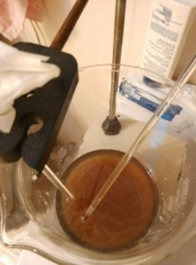 - 再开一瓶250mL装的
发烟硝酸，倒入500mL烧杯中，然后加入浓硫酸至500mL刻度线处，搅拌均匀。
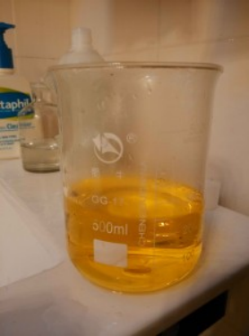 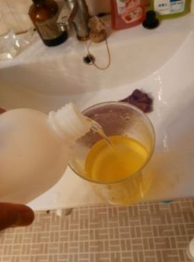 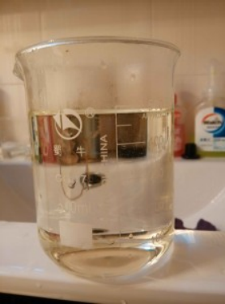 - 将配好的混酸加入溶有二硝基甲苯的
浓硫酸中，加热烧杯中的硝化液至105℃-115℃，并保温5-7小时。
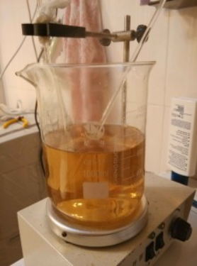 - 当硝化液温度升高，
硝酸蒸气和二氧化氮会剧烈地冒出，此时应将一盛有冰水混合物的碗放在烧杯口作为简易回流装置以回收硝酸并防止空气污染。
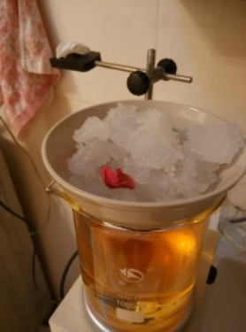 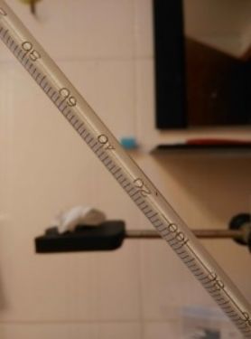 - 5-7小时后，将硝化液倒入大量冷水中，即析出TNT晶体。过滤，将TNT置于
烧杯中，加入沸水熔化TNT，剧烈搅拌洗涤后倒去上层废液，这样反复数次，洗到上层废液pH值为6.5左右。
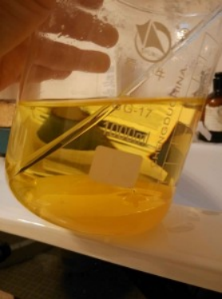 - 配制一些0.2mol/L的
亚硫酸钠溶液（我的亚硫酸钠不纯，有黄色杂质），将适量溶液倒入洗涤后的TNT中，加热到TNT熔融，剧烈搅拌洗涤TNT，此时上层废液变成深红色。
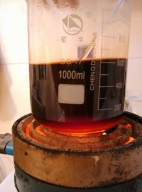 - 倒去上层深红色废液，再用第十三步的方法洗涤TNT数次，即可得到呈纯净淡黄色的高纯TNT，将其转移到250mL的
烧杯中。
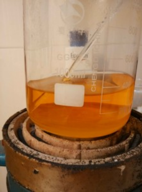 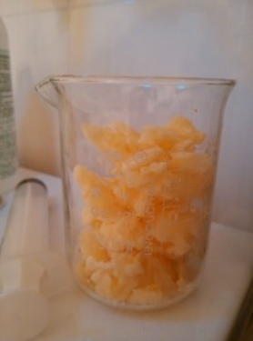 - 向TNT中加入少量水，并在
锅里水浴加热使其熔融，然后向里面加入微量硫酸，再剧烈搅拌，然后停止水浴加热，待TNT凝固后到去上层废液。
这步是为了使TNT略带酸性，便于保存（上一步使TNT带有碱性，而TNT遇碱变质）。
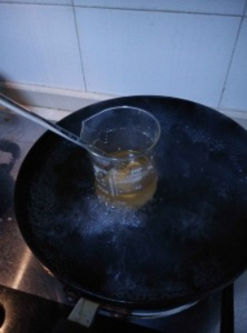 - 将不含水的TNT水浴加热熔融，浇入模具，制成柱状，保存备用。
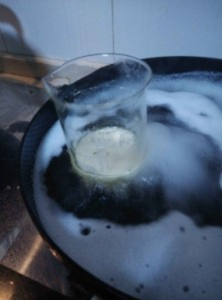 - 称得产物质量为101.60克，理论产量为160.11克，产率为63.46%。
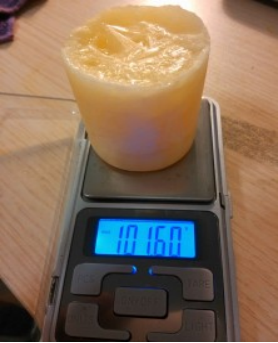
备注
如果您遵循本指南的制作流程而发现问题或可以改进的流程，请提出 Issue 或 Pull request 。